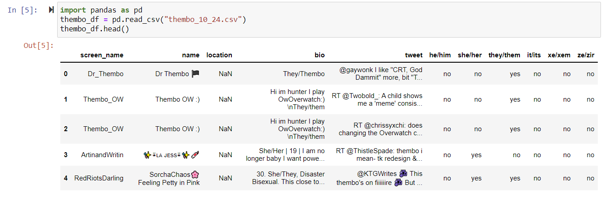

LUCIENDMENSAH
Trans* Twitter Project Intro
An Update on the Cool Work I'm Doing!
Updated Project Goals
The goal of this project is to explore how Twitter users use language and neologisms to express gender freedom. Some of the questions that I would like to hopefully answer are:
Is there an alignment between the pronouns that people use to describe themselves and the words that they use?
Do those that use pronoun sets outside of "he/him" and "she/her" tend to create more words to fit their identities?
What is the general sentiment of these neologisms with specific reference to those who may be outside the gender binary?
How often do people use neologisms to talk about themselves vs others?
Some smaller questions that I also would like to look at:
How many Twitter users do actually put their pronouns in their bios/location?
Is it more common to put pronouns in their bio or their location?
Data Pulling Code
I pull this data using Tweepy, a Python library designed specifically for interacting with Twitter. It also requires that I have Twitter Dev Access, which is something that I acquired a while ago. I start off by importing the necessary libraries - in addition to Tweepy, I need re for my regex, pandas to read the CSVs and matplotlib for visualizations.
import tweepy
import pandas as pd
import re
import matplotlib.pyplot as plt
import numpy as np
from wordcloud import WordCloud, STOPWORDS, ImageColorGenerator
After that, it is necessary to be authenticated through Twitter, and I have hidden my keys.
consumer_key = "####"
consumer_secret = "####"
access_token = "####"
access_token_secret = "####"
# creating the authentication object
auth = tweepy.OAuthHandler(consumer_key, consumer_secret)
# setting your access token and secret
auth.set_access_token(access_token, access_token_secret)
# creating the API object while passing in auth information
api = tweepy.API(auth)
I set up the list of features that I will be looking for to create my dataframe, I have a list of the queries I will be searching for, and I have a dictionary that will make the process easier for looping through.
user_features_list = ["screen_name", "name", "location", "bio", "tweet",
"he/him", "she/her", "they/them",
"it/its", "xe/xem", "ze/zir"]
query_list = ["thembo","bimbo","himbo","theydies","ladies", "gentlethem", "gentlemen", "theybie", "transgender","trans woman","trans man"]
res_dict = {}
I am focusing on neologisms in English, so I set my language to English. The max number of tweets I can pull per query is 100 terms, so I set that, and then I begin a loop to search for tweets that are in my query, match the language, and match the number of tweets. I should note that with the labels "transwoman" and "transman", it is specifically spaced out in my code, but it still captures instances of "transwoman" and "transman", which is specifically marked as okay as a self-identifier but there has been discourse about which version is politically correct. My viewpoint is that one should separate the two, as "trans" is an adjective modifying "man" in the same way that "cis" is oftentime (silently) modifying man or woman. Putting the adjective and noun together may often be seen as a form of othering to differenciate a trans person from a cis person purposefully to deny their womanhood or manhood.
# english language tweets
language = "en"
# can set number of tweets to pull - up to 100
numTweets = 100
# calling the user_timeline function with our parameters
for query in query_list:
res_dict[query] = api.search_tweets(q=query, lang=language, count=numTweets)
My code to search through tweets uses regex to search through a user's bio and location to see what set of pronouns they use. Right now, I am only looking for he/him, they/them, she/her, it/its, xe/xir/xem, ze/zir/zem in regards to pronouns since those are the sets that I have come across the most. As I encounter new sets of pronouns, I do my best to add them to this list. This code could also possibly use some refinement as it may make more sense to make each of the pronouns into a list and then do regex from there. All the pronouns are appended to their respective lists, and then I also have a specific list for users that do not have pronouns in their bio. From there, I am able to reference the previously created list to compile the dataframe since users that have at least one instance of a pronoun will be captured, and if a specific user uses multiple sets of pronouns, the dataframe will mark each of these. This allows for a variety of pronouns and possibly identities to be captured.
# cell to search through tweets
for query in query_list:
users_df = pd.DataFrame(columns = user_features_list)
pro_they = []
pro_he = []
pro_she = []
pro_it = []
pro_xe = []
pro_ze = []
no_pronouns = []
# cell to search through tweets
for query in query_list:
users_df = pd.DataFrame(columns = user_features_list)
pro_they = []
pro_he = []
pro_she = []
pro_it = []
pro_xe = []
pro_ze = []
no_pronouns = []
authors = []
tweets = []
for tweet in res_dict[query]: #there has to be a way to make this less redundant
# prints the username, tweet w query, and bio description
tweets.append(tweet.text)
# print(tweet.user.screen_name,"Tweeted:",tweet.text,"| User Description:", tweet.user.description)
authors.append(tweet.user.screen_name)
# this searches for they/them
if re.search((r'\bthey\b' or r'\bthem\b'), tweet.user.description, re.IGNORECASE):
pro_they.append(tweet.user.screen_name) #searches for they/them
if re.search((r'\bthey\b' or r'\bthem\b'), tweet.user.location, re.IGNORECASE):
pro_they.append(tweet.user.screen_name) #searches for they/them
if re.search((r'\bshe\b' or r'\bher\b'), tweet.user.description, re.IGNORECASE):
pro_she.append(tweet.user.screen_name)
if re.search((r'\bshe\b' or r'\bher\b'), tweet.user.location, re.IGNORECASE):
pro_she.append(tweet.user.screen_name)
if re.search((r'\bhe\b' or r'\bhim\b'), tweet.user.description, re.IGNORECASE):
pro_he.append(tweet.user.screen_name)
if re.search((r'\bhe\b' or r'\bhim\b'), tweet.user.location, re.IGNORECASE):
pro_he.append(tweet.user.screen_name)
if re.search((r'\bit\b' or r'\bits\b'), tweet.user.description, re.IGNORECASE):
pro_it.append(tweet.user.screen_name)
if re.search((r'\bit\b' or r'\bits\b'), tweet.user.location, re.IGNORECASE):
pro_it.append(tweet.user.screen_name)
if re.search((r'\bxe\b' or r'\bxir\b' or r'\bxem\b' or r'\bxey\b'), tweet.user.description, re.IGNORECASE):
pro_xe.append(tweet.user.screen_name)
if re.search((r'\bxe\b' or r'\bxir\b' or r'\bxem\b' or r'\bxey\b'), tweet.user.location, re.IGNORECASE):
pro_xe.append(tweet.user.screen_name)
if re.search((r'\bze\b' or r'\bzir\b' or r'\bzem\b'), tweet.user.description, re.IGNORECASE):
pro_ze.append(tweet.user.screen_name)
if re.search((r'\bze\b' or r'\bzir\b' or r'\bzem\b'), tweet.user.location, re.IGNORECASE):
pro_ze.append(tweet.user.screen_name)
#de,dem
#people who use words like genderqueer, nb
if re.search((r'\bnonbinary\b' or r'\bgenderqueer\b'), tweet.user.description, re.IGNORECASE):
nbgq.append(tweet.user.screen_name)
for tweet in res_dict[query]: #this may not be necessary
# Create empty dict
user_features = {}
# Get user data
user_features['bio'] = tweet.user.description
user_features['screen_name'] = tweet.user.screen_name
user_features['name'] = tweet.user.name
user_features['tweet'] = tweet.text
user_features['location'] = tweet.user.location
#fills in the yeses
if tweet.user.screen_name in pro_they:
user_features['they/them'] = 'yes'
if tweet.user.screen_name in pro_he:
user_features['he/him'] = 'yes'
if tweet.user.screen_name in pro_she:
user_features['she/her'] = 'yes'
if tweet.user.screen_name in pro_it:
user_features['it/its'] = 'yes'
if tweet.user.screen_name in pro_xe:
user_features['xe/xem'] = 'yes'
if tweet.user.screen_name in pro_ze:
user_features['ze/zem'] = 'yes'
#fills in the nos
if tweet.user.screen_name not in pro_he:
user_features['he/him'] = 'no'
if tweet.user.screen_name not in pro_she:
user_features['she/her'] = 'no'
if tweet.user.screen_name not in pro_xe:
user_features['xe/xem'] = 'no'
if tweet.user.screen_name not in pro_they:
user_features['they/them'] = 'no'
if tweet.user.screen_name not in pro_it:
user_features['it/its'] = 'no'
if tweet.user.screen_name not in pro_ze:
user_features['ze/zem'] = 'no'
# concat the dfs
user = pd.DataFrame(user_features, index = [0])
users_df = pd.concat([users_df, user], ignore_index = True)
date_string = '11_18'
filename = '%s_%s.csv' % (query, date_string)
users_df.to_csv(filename, encoding='utf-8', index=False)
Data
I will be pulling data from Twitter every other day, from a query of the words: "thembo", "bimbo", "himbo", "theydies", "ladies", "gentlethem", "gentlemen", "theybie", "transgender", "transwoman", and "transman". Each of these terms will be pulled in, and will be in their own csv file. An example of one of the datasets is available below:

As we can see from the preview of the data, we get a user's screen_name (user name), their name (display name), location (the reason why it is included is because some users put their pronouns in their location), bio (the most popular place to put pronouns), the tweet that had the word that was queried, which in this case was "thembo", and columns that specifically denote what set of pronouns were indicated either in their bio or location. I used regular expressions specifically searching for different pronoun sets in order to create the columns that indicated what pronouns they used. I figured this would be the most benefiticial while doing the data analysis. One issue with the data is that the Twitter indiscriminately will include users that may not specifically Tweeted a certain word, but also has it in their bio or their screen name, as we see for the first person. I, however, have not removed them from my analysis because those users show example of using one of the gendered neologisms as a self-identification, which is the main point of my research. Additionally, the main reason I am using pronouns is because they are another hallmark of self identification, though, while dealing with the different words in the queries, we will be interacting with the societal implications that each word has. For example, "bimbo" being aligned with women, "himbo" with men, and "thembo" being created to align with non-binary people. There is a fine line with this research as someone may be non-binary but not use they/them pronouns or vise-versa. That is why I will be trying to stray away from making such specific alignments, but we do live in an overarching cis-centric society.
Data Analysis
The next step is to compile the created dataframes together throughout the dates that have been collected. In order to make my findings statistically significant, I have about 1,000 tweets per query, which is all Tweeters - those who don't have pronouns in their bios and those that do. Reminder that I have 11 queries, which puts us at 11,000 data points. Wow! Since I want to look specifically at users with pronouns in their bios, that will likely remove about half of the data, but before we do that, we can answer one of my questions by looking at the number of people who have pronouns in their bios compared to those who don't.